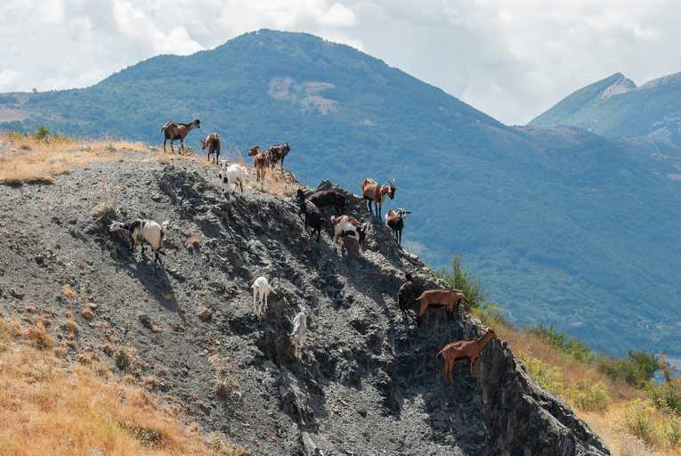
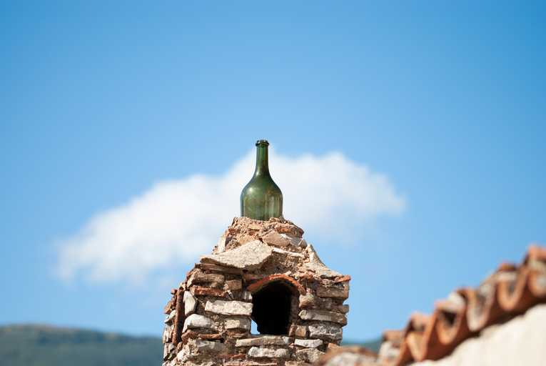

Ho avuto il piacere di incontrare Fausto Caricato durante una residenza di canto a cui partecipavano i miei genitori in un paesino in calabria (San Lorenzo Bellizzi).
L'esperienza è durata dei giorni nei quali si è svolta anche la festa di paese "Saperi e Sapori di San Lorenzo Bellizzi". Li Fausto, con l'aiuto di Douchan Mariti, ha filmato delle brevi interviste. Che poi mi ha chiesto di montare, inserendo tra un'intervista e l'altra delle sequenze di foto scattate da me e Zoe Mariti durante la residenza a San Lorenzo, con in sottofondo alcuni suoni ambientali registrati da Fausto sempre in quei giorni.
VIDEO COMPLETO _ SETTE INTERVISTE PER SAPERI E SAPORI 2023